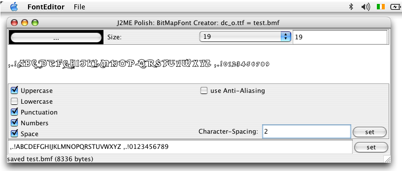

<%define inDocumentationSection %>
<%define inDocumentationSection.tools %>
<%set title = J2ME Polish: Standalone Tools %>
<%set basedir = ../ %>
<%include start.txt %>
	
	<div id="content">
	<h1 id="top">Standalone Tools</h1>
	<%index %>
	<p>J2ME Polish includes standalone tools for specialized tasks in
	the <code>${polish.home}/bin</code> folder.
	<br />
	
	</p>
	<h2 id="binaryeditor">Binary Editor</h2>
	<p>
Use the <i>binary-editor</i> for creating and modifying binary data like level data files.
It can also generate the Java/J2ME code for loading that data for you.
<br /><br />

<br /><br /><br />
	</p>
	<h2 id="fonteditor">Font Editor</h2>
	<p>
The <i>font-editor</i> creates bitmap fonts (*.bmf) out of any true type fonts. Such
bitmap fonts can be used by the J2ME Polish GUI with the <code>font-bitmap</code> CSS-attribute or directly with the 
<a href="<%= javadocdir %>../javadoc/j2me/de/enough/polish/util/BitMapFont.html" target="_blank">de.enough.polish.util.BitMapFont</a> 
<a href="utilities.html#bitmapfont">utiliy</a> class.
<br /><br />

</p>
	
<%include end.txt %>